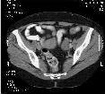
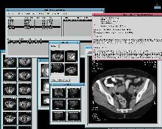

| Noticias Archivos Compañias Consejos y Trucos |
Linux en Hospitalespor Manuel Soriano |
Presentación
Descubriendo Linux
Evaluando Linux
St. John
Qué hace Linux en un Hospital?
Qué hacen esos dos servidores?
En un cliente
En un servidor
Conclusión


{kind=link}
Quien Soy?Como persona educada que fui, primero me presentare al lector. Me llamo Manuel Soriano, trabajo como consultor y mi pasion es el Linux. No siempre fui consultor, tambien estudie en el Politecnico de Ginebra/Suiza,tengo que decir que en aquellos años no existia Linux, Bill Gates, Intel, etc.. Y la verdad es que los ordenadores ocupaban plantas enteras de edificios y tenian una potencia de calculo que asombraba, el que tenia 32K de memoria RAM (si 32K, K de kilo) era muy rico, no hablemos si eso se juntaba con 20Megas de disco duro y una o dos cintas magneticas. Pues en un ambiente gracioso, nos juntabamos unos 200 tios en la escalera que daba acceso al centro de calculo, con nuestro programa (fortran) en tarjetas perforadas, el ambiente que habia en la escalera era alucinante. Cuando tenias acceso al lector era un momento magico, leias las tarjetas, esperabas unos 5 o seis minutos y la impresora de cadena escupia su veredicto, casi siempre era de culpabilidad, te tocaba corregir la sentencia erronea y vuelta a la cola. Bueno todo esto para deciros que no tengo veinte años y que ya llevo unos cuantos con esto del byte y el bit, tengan paridad o no. Discubriendo LinuxEn mi andadura profesional he tenido dos grandes acontecimientos. Una maquina Z80 multi-procesador (si has leido bien) con UNIX (3.0) pero Unix de ATT y dieciseis años despues... Linux. Yo venia de las grandes y potentes maquinas (Control Data Cyber) con tropecientos megas en disco, porrones de memoria, cantidades ingentes de usuarios sedientos de CPU y, un dia, va y me presentan un CROMEMCO (mi primer micro). ! Sorpresa ! Tenia un sistema operativo cuyo nombre era ¿ Unix, y eso que es ? Pues con el me quede, luego con el tiempo fui conociendo otras cosas, MVS, VM, AIX, PROTEUS, MS/DOS (y su secuela), UNIX ATT 4.2, etc... Para matar mis ratos libres hice la adquisicion de un 386 y le instale un UNIX ATT 4.2 con X11 (R3) y Motif (1.0), pero en la revistas se anunciaba la version 5 de X11, Motif 1.2.4 y un sistema operativo (UNIX) que costaba 50 dolares, para aquellos que han trabajado sea con SCO o cualquier otro sabran lo que cuesta un licencia de esos bichos. Dedique unos 250 dolares a la compra del SO y Motif y esperar me toco. Tardo cerca de un mes en llegar, un Yggdrasyl con kernel 0.95, le dedique un disco, luego todo el ordenador y al final, mi vida profesional (y no me arrepiento). Evaluando LinuxQue si que funciona, tio, te lo aseguro, con X11R5 y MOTIF 1.2.4, no se cuelga, mi boton de "RESET" a pillado polvo de no usarlo. Esto es lo que dije a un amigo suizo que me llamo aqui en España, este explotaba Solaris, X11R4 y Motif 1.1 para los PC's, cada licencia le costaba la bagatela de 8.000 dolares y estaba buscando algo "mas barato", le comente el coste de Linux, no me colgo el telefono porque me tiene aprecio, pero si que me dijo algo que sonaba a "borracho", el caso es que lo compro. Este buen hombre posee una empressa (DAPSYS. SA ) dedicada a la informatica hospitalaria, su especilidad es el archivado de imagenes radiologicas y su restitucion en pantalla, sea con X11 y Motif o Win95. Despues de probarlo durante unos dias (quince) lo adopto, mandando a la basura 2 AIX, 1 HP 800 y un DEC con Ultrix, hoy es un hombre feliz con ordenador "portatil" y su Linux. Esta empresa tenia unas pocas instalaciones ya realizadas en Suiza, cuando de Canada se les presento un dia (casi sin avisar) dos vendedores de una muy importante empresa americana, estos no venian a vender sino comprobar "algo" que "alguien" les habia comentado en el RSNA de Chicago, el RSNA es el evento mundial en el tema de la radiologia. Dos meses despues el director de Dapsys se fue hacia Montreal con su "portatil" para enseñar el producto a unos cuantos doctores, tres meses despues (y 504 años despues de Colon) llego yo a las Americas para hacer la primera instalacion en aquel continente de Iris. Iris es la aplicacion de archivado y restitucion de imagenes radiologicas. Esta primera instalacion les permite comprobar la robustez del producto, Linux tiene un gran papel en ello, y que manejamos correctamente el tema. St. JohnTodo esto para llegar a lo que nos interesa, la INSTALACION. Pero antes voy a centrar la situacion. La radiologia es una especialidad que suele ser bastante cara tanto en aparatologia como en soporte pelicula, este ultimo puede oscilar entre un 15 o 20% del presupuesto anual de un departamento de radilogia, por esta y otras razones se pretende suprimir el soporte pelicula por el de la pantalla de ordenador. Ademas Iris permite centralizar por paciente TODOS los eventos radiologicos, cada imagen tiene grabada en ella el nombre, apellidos y codigo de paciente, Iris es capaz, mediante tratamiento OCR, extaer esos datos de la imagen y archivar la o las imagenes del paciente junto a las existentes (de haberlas). Iris no solo aporta un ahorro en pelicula, sino que un ahorro en espacio, los hospitales deben archivar la imagenes de sus pacientes durante años, eficiencia una imagen puede ser vista simultaneamente por varias persona a kilometros de distancia (incluso con oceanos por medio), rapidez de busqueda. En la parte anglofona del Canada hay una tendencia a centralizar el tema de la sanidad, pero en fases, primero por regiones y luego a nivel estatal, cada estado tiene una cierta independencia y el estado que nos ha contratado esta primera instalacion tiene siete regiones. En esta region vamos a conectar seis hospitales mediante una WAN ATM de 100 y 10 Megabits, Linux no tiene nada que ver en esta red, el solo actua sobre ella, pero permite resaltar la importancia dada al tema radiologico. La cabeza de todo el sistema se situa en St. John, este tiene dos archivadores :
Luego otro archivador de mismas caracteristicas pero con "solo" 27G en St. Joseph En una primera fase la red la conformaran seis hospitales, añadiendose dos mas en la segunda fase del proyecto, en esta primera fase se van a conectar:
A la red troncal de los hospitales, se van a conectar todos los medicos, radiologos o no que deseen enviar sus pacientes a los centros hospitalarios estatales. Qué hace Linux en un Hospital?Eso, por que Linux. En el ambiente hospitalario Linux tiene una fuerza imbatable, por su precio y por el tipo de hard que usa. Para mismas prestaciones el coste final suele ser del 50% o menos con respecto a estaciones Sun, HP, IBM o Dec y unas prestaciones que nada les tiene que envidiar. Este ahorro les permite instalar una mayor cantidad de material a traves del hospital y de esta formar incrementar sus servicios, si servicios, en Canada la sanidad no es publica, sino semi, es decir, los hospitales son regionales y dependen del gobierno regional, pero su coste solo es sufragado en parte por el contribuyente regional, sino por la facturacion que realizan los establecimientos, pero eso cuanto mas economia mejor y si a eso le añadimos mayores servicios, pues mejor, mas enfermos decidiran hospitalizarse en el hospital en lugar de una clinica privida. En cuanto a la robustez del Linux, no tengo nada que decir, tengo un servidor que tiene un record de funcionamiento sin parar, 26 meses. Nadie y digo bien NADIE, no ha puesto pegas en la instalacion del Linux, lo que importa es la solucion y que la solucion FUNCIONE, sobre que funciona esa solucion da igual. Este concepto se aleja mucho de la vieja idea de poner un sistema operativo (con marca) como solucion y luego un programa que agudice esa solucion. La verdad es que no hemos tenido el menor problema en poner Linux en los diversos hospitales, ni un comentario jocoso o denigracion del soporte, incluso he podido notar un cierto respeto a la palabra Linux, por algo sera que este sistema tiene su mayor soporte en los EEUU. (Aunque os parezca un poco raro, Canada es EEUU). Y Qué hacen esos dos servidores?Una imagen radiologica suele tener entre 256x256x1 hasta 8192x4096x2, es facil entender ese "derroche" de Gigas para su almacenamiento, ademas se prevee que solo aguantara unos 6 meses, pasado ese tiempo un estudio de un paciente pasa a otro soporte (amovible), de momento cinta DAT, pero seguramente se cambiara a robots de Magneto Opticos de 600G. La topologia de red es muy sencilla, para cada hospital :Ethernet de 10Mg/bits para :
Como es facil darse cuenta, los aparatos de radiologia no entran en contacto con la red del hospital, son los servidores Linux quien se ocupan de recuperar las imagenes, archivarlas y servirlas a las estaciones de visualizacion que las requieran. En un servidorPara un paciente determinado se pueden presentar X exploraciones de varias modalidades. Una exploracion es un examen radiologico, un examen puede tener una o X imagenes o disparos. Una modalidad es un aparato capaz de producir imagenes radiologicas sea por Rayos-X, ultrasonidos, resonancia magnetica, etc... Cuando se producen las imagenes estas llegan directamente al servidor, este tiene que ser capaz de "leer" la imagen y extraer los datos del paciente, para reenviar "rebotar" la imagen a las estaciones de visualizacion y archivar con los datos del paciente leido, para poder devolver la o las imagenes en peticiones posteriores. Antes de archivar una imagen esta pasa por un proceso de "limpieza" y compresion no destructiva. Conseguimos ratios de 60% en compresiones, podriamos llegar a mas pero seria en detrimento de la eficacia tanto en el archivado como en la posterior restitucion. Segun las pruebas realizadas una imagen de 512x512x2 tarda 0.3 segundos, de promedio, en mostrarse en pantalla desde que se inicio la transaccion. Hablo de promedio, porque un estudio no es siempre una sola imagen, este promedio es mejorable y no solo por hard sino por la propia forma de obtenerlo. St.John tiene 12 salas que suelen producir unas 1.000 imagenes al dia, esto da un poco a que se tienen que esperar los dos servidores, durante el periodo de pruebas estamos llegando a la friolera ocupacion de CPU del 2%, con 6 salas enviando imagenes. En un clienteEsta es la parte sencilla, si me lo permitis, hay tres tipos de cliente :
Las SGI reciben las imagenes que "rebotan" en los servidores, de esta forma los radilogos tienen a disposicion las imagenes "del dia". Estas estaciones no son nuestras, ni son Linux (pero poco les queda :-), estas estaciones tiene 2 pantallas de 20 pulgadas cada una. Las estaciones de trabajo IRIS/Motif son para hacer una labor de, principalmente, de visualizacion con diagnostico, gracias que pueden pilotar hasta cuatro pantallas, de momento solo tienen 2 de 20 pulgadas, las busquedas en la base de datos se pueden resumir en :
Las estaciones de trabajo IRIS/Win95 realizan la misma labor que las de Motif, con la salvedad que suelen ser instaladas en material ya existente y solo sirven como apoyo al diagnostico y no a su consecucion. Y AcaboPara acabar solo puedo decir que la palabra "guerrilla" no es vinculante con Linux, este sistema tiene tanto espacio en la arena del ruedo como cualquier otro, lo que importa son las soluciones que se desarrollan sobre Linux, el sistema operativo es solo en mero soporte, este soporte puede ser bueno o malo, la importancia del exito o fracaso de una solucion es la propia solucion. Estoy de acuerdo que ultimamente alguien a conseguido confundir a la mayoria de la gente haciendoles pensar que la solucion pasaba por su SO, si somos buenos profesionales debemos convencer que NOSOTROS sabemos mucho mejor que un periodista lo que funciona o no. Que os divertais con Linux...Bye Manu |
{kind=link}
This website is mantained by Miguel A Sepulveda.